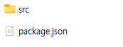

CSS-Deduplication part 2 (CSS 중복제거 플러그인 제작)
이전 포스팅을 통해 postcss 커스텀 스크립트로 CSS 중복을 제거하는 방법을 확인할 수 있습니다.
이번 포스팅에서는 media 쿼리에 대한 처리 로직을 추가하고 postcss 플러그인으로 제작해 보도록 하겠습니다. 다음 포스팅을 통해 완성된 플러그인을 npmjs.org 사이트를 통해 배포하고 npm i 명령어로 설치가 가능하게 만들어 보겠습니다.
Abstract
- postcss 커스텀 스크립트 개선(media 쿼리 처리 로직 추가)
- npm 패키지로 배포 가능한 플러그인으로 제작
커스텀 스크립트 개선
중복제거 커스텀 스크립트는 selector 기반으로 작업을 수행하는데 @media 쿼리에 대해서는 중복제거를 수행하지 못하고 있습니다. @가 붙은 atrule 에 대해서도 처리가 가능하도록 스크립트를 개선하겠습니다.
스크립트 개선
postcss.config.js 파일을 아래와 같이 수정합니다.
postcss 코드 기술 방법에 대해서는 API 문서 의 내용을 참고하여 작성하면 됩니다.
const postcss = require("postcss");
module.exports = {
plugins: [customMerge({})],
};
// custom-clean plugin to keep only the first declaration of each rule
function customMerge(options) {
return {
postcssPlugin: "postcss-delete-duplicate-selector",
Once(root, { result }) {
const filteredRules = new Map();
root.walk((node) => {
// Check if the node is a rule and not an at-rule and parent type is root
if (node.type === "rule" && node.parent.type === "root") {
const selector = node.selector;
if (!filteredRules.has(selector)) {
filteredRules.set(selector, node);
}
} else if (node.type === "atrule") {
const mediaRule = postcss.atRule({
name: node.name,
params: node.params,
});
node.nodes.forEach((rule) => {
const clonedRule = rule.clone();
mediaRule.append(clonedRule);
});
filteredRules.set(mediaRule.toString(), mediaRule);
}
});
root.removeAll();
filteredRules.forEach((rule, index) => {
root.append(rule);
});
},
};
}
npm run build 명령어를 수행하여 atrule 에 대해서도 잘 처리가 되는지 확인합니다.
플러그인 코드 작성
동작이 잘 되는것을 확인했으면 이를 플러그인 형태로 제작하도록 하겠습니다. 플러그인의 이름은 postcss-delete-duplicate-selector 로 하겠습니다.
node_modules 디렉토리 하위에 postcss-delete-duplicate-selector 디렉토리를 생성합니다.
디렉토리의 전체 구조는 다음과 같습니다.
node_modules/potcss-delete-duplicate-selector/

src 디렉토리에 index.js 파일을 다음과 같이 생성합니다.
node_modules/potcss-delete-duplicate-selector/src/index.js
const postcss = require("postcss");
const plugin = (opts = {}) => {
return {
postcssPlugin: "postcss-delete-duplicate-selector",
Once(root, { result }) {
const filteredRules = new Map();
root.walk((node) => {
// Check if the node is a rule and not an at-rule and parent type is root
if (node.type === "rule" && node.parent.type === "root") {
const selector = node.selector;
if (!filteredRules.has(selector)) {
filteredRules.set(selector, node);
}
} else if (node.type === "atrule") {
const mediaRule = postcss.atRule({
name: node.name,
params: node.params,
});
node.nodes.forEach((rule) => {
const clonedRule = rule.clone();
mediaRule.append(clonedRule);
});
filteredRules.set(mediaRule.toString(), mediaRule);
}
});
root.removeAll();
filteredRules.forEach((rule, index) => {
root.append(rule);
});
},
};
};
plugin.postcss = true;
module.exports = plugin;
module.exports 를 이용하여 외부 참조가 가능하도록 코드를 작성해줍니다.
package.json 파일은 다음과 같이 작성합니다.
node_modules/potcss-delete-duplicate-selector/package.json
{
"name": "postcss-delete-duplicate-selector",
"version": "1.0.0",
"description": "PostCSS plugin delete duplicate css selector in the file",
"main": "src/index.js",
"keywords": [
"postcss",
"css",
"postcss-plugin",
"delete",
"duplicate",
"selector",
"Deduplication"
],
"author": "hwantage <hwantagexsw2@gmail.com>",
"license": "MIT",
"repository": {
"type": "git",
"url": "https://github.com/hwantage/postcss-delete-duplicate-selector.git"
},
"engines": {
"node": ">=18.15.0"
},
"peerDependencies": {
"postcss": "^8.4.32"
},
"devDependencies": {
"postcss": "^8.4.32"
}
}
“main” 항목이 entry 소스 경로가 됩니다. 우리는 src 디렉토리 하위에 코드를 작성했기 때문에 src/index.js 로 작성합니다.
“version"의 경우 1.0.0 부터 작성을 하시면 됩니다.
프로젝트 루트의 postcss.config.js 파일을 다음과 같이 변경합니다.
/postcss.config.js
module.exports = {
plugins: [require("postcss-delete-duplicate-selector")],
};
기존의 커스텀 함수 코드를 제거하고 node_modules 에 작성된 플러그인을 참조하도록 변경하였습니다.
npm run build 를 수행하여 node_modules 하위에 생성한 플러그인 코드를 통해 CSS 중복 제거가 잘 수행되는지 확인합니다.
여기까지 하면 postcss 를 통해 플러그인 생성 준비를 완료했습니다.
작성된 플러그인을 npm 패키지에 등록하여 오픈소스 생태계에 기여하는 방법에 대해 다음 포스팅에서 설명하겠습니다.